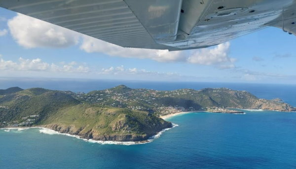
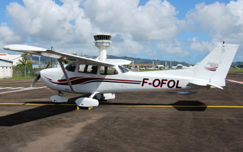
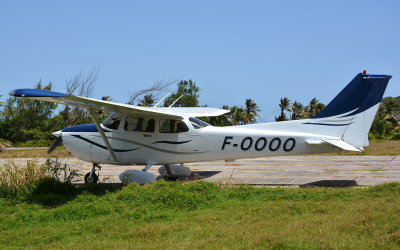

Aéroclub de l'Aviation Civile et de Guadeloupe
ACACG Rue Ernest Pallas, 97139 Les Abymes, Guadeloupe (FWI) | bureau.acacg@gmail.com | +33 (0)7 61 89 40 97
- Notre activité
- Nos avions
- Notre Equipe
- Tarifs & Inscriptions
- PILOTES / Fichiers club
- PILOTES / Liens utiles
- Nous contacter

Notre activité
L'ACACG - Des cours de pilotage aux vols de loisirs...
Basé à Pointe-à Pitre sur l'aéroport du Raizet (TFFR), l'Aéro-Club de l'Aviation Civile de la Guadeloupe (ACACG), association loi 1901, propose depuis 1991 le vol dans les Antilles. Notre club est affilié à la Fédération Française Aéronautique - FFA.
Si les machines se sont succédées, avec les acquisitions passées d'un Robin 2160, de plusieurs Pipers et Cessnas, les moyens humains et le plaisir du vol n'a jamais changé.
Cours de pilotage / Instruction
La première mission de notre club est l'instruction, venez passer apprendre à piloter ou vous perfectionner au sein de notre club affilié FFA.
- PPL, brevet de pilote privé - Private Pilot Licence
- LAPL
- Qualification vol de nuit
- Qualification de site (Les Saintes TFFS / Saint-Barthélemy TFFJ)
Combien coûte une formation de pilote privé ?
Les aéro-clubs agrées par la FFA sont des associations à but non lucratif, sous le régime de la loi de 1901. Les élèves pilotes participent uniquement aux frais engagés par l'association.
Chaque formation est unique, en général elle dure entre 6 à 12 mois, mais peut être plus longue. Le coût total peut évoluer légèrement mais voici les tarifs (approximatifs pour certains) :
- 230 euros l'heure de vol avec instructeur (47h minimum, en général entre 50 et 55h nécessaires), soit entre 10 500 et 13 000 euros environ
- 110 euros de cotisation club par an
- 81 euros de licence FFA pour 2024, ça augmente de 1 ou 2euros tous les ans
- Du matériel (carnet de vol, plaquette, casque etc) pour environ 300 euros
- Un abonnement à un site en ligne pour le théorique pour environ 80 euros
- Des redevances pour délivrance des licences ou inscription aux examens pour environ 200 euros
Le gros de la formation est donc le coût de l’heure de vol qui comprend l’amortissement, l’entretien des avions, le carburant…
Les élèves pilotes âgés de moins de 21 ans peuvent bénéficier, grâce à la Fédération Française Aéronautique, de plusieurs bourses de 335 € sous certaines conditions.
Après le brevet, la dépense moyenne par an et par pilote peut être estimée à 2000 €.
Vols de loisirs
Avec les îles de Saint-Martin, Saint-Barth, Saint-Kitts & Nevis, Antigua & Barbuda, la Guadeloupe, la Désirade, les Saintes, Marie-Galante, la Dominique, la Martique, Sainte-Lucie... Notre environnement se prêtera à toutes vos envies de découverte.
Nos avions
Le club dispose de deux avions similaires et récents de type Cessna 172S dont un équipé IFR.
F-OFOL
210 € / Heure de vol en solo | 230 € / Heure de vol avec instructeur
C172S de 2000 acquis en 2018 équipé IFR : GNS530, VOR, ILS, ADF, horizon artificiel G5, PA 2 axes et transpondeur mode S
F-OOOO
210 € / Heure de vol en solo | 230 € / Heure de vol avec instructeur
C172S de 2004 acquis en 2008. Horizon artificiel G5, GPS moving map KLN94, VOR, ILS, PA 2 axes
Tarifs & Inscriptions
>> Téléchargez ici le dossier d'inscription / réinscription 2024 <<
- Cotisation club 2024 / 110 € | Dossier d'inscription
- Licence FFA 2024 / 89 €
- Licence FFA 2024 + InfoPilote / 136 €
- Option d'assurance FFA à choisir
- Relevé d'identité bancaire - RIB ACACG
Notre Equipe
- PRESIDENT / Joël Catelo
- RESPONSABLE PEDAGOGIQUE - FI / Arnaud Darras
- INSTRUCTEUR / Philippe Cahouet
- INSTRUCTEUR / Jérôme Cofflard
- INSTRUCTEUR / Xavier-Philippe Ebring
- INSTRUCTEUR / Paul-Eric Guillosson
- INSTRUCTEUR / William Musculus
- INSTRUCTEUR / Michel Stefkovic
PILOTES / Fichiers club
- Règlement Intérieur (PDF)
- Règles de réservation (PDF)
- Checklist C172S (PDF)
- Centrage C172S FOOOO [Format Excel] | [Format PDF]
- General Declaration Form [Format Word] | [Format PDF]
- PPR Parking Saint Barth TFFJ (PDF)
- Relevé d'identité bancaire - RIB ACACG
PILOTES / Liens utiles
- OpenFlyers ACACG
- SOFIA Briefing DGAC - préparation des vols
- SIA Service de l'Information Aéronautique - choisir eAIP CAR-SAM-NAM
- Radar Guadeloupe Meteo France - 50 km
- Satellite Antilles Meteo France
- Antigua VC Bird Cross Border Request
Nous contacter
Aéroclub de l'Aviation Civile Guadeloupe - ACACG Rue Ernest Pallas, 97139 Les Abymes, Guadeloupe (FWI)
+33 (0)7 61 89 40 97